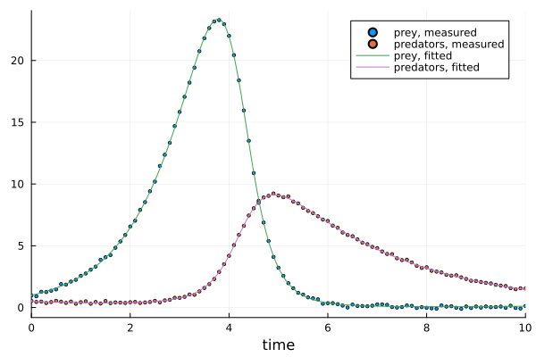

Noisy data
Measured data are noisy, and noise is hard on the equation-solving part of this method, because it works from derivatives of the data and differentiating amplifies noise. So estimate does not stop there. It takes each solution of the equations and fits it to the data by least squares. This page shows what each step contributes.
An example
The predator-prey model again, with 101 measurements of each population. Noise has been added to them, with a standard deviation of 2% of each population's average size:
using ODEParameterEstimation, ModelingToolkit
using ModelingToolkit: t_nounits as t, D_nounits as D
@parameters α β γ δ
@variables prey(t) predators(t) y1(t) y2(t)
@named lotka_volterra = System([
D(prey) ~ α * prey - β * prey * predators,
D(predators) ~ δ * prey * predators - γ * predators,
], t)
truth = [α => 1.1, β => 0.4, γ => 0.4, δ => 0.1, prey => 1.0, predators => 0.5]
problem = ParameterEstimationProblem(lotka_volterra, [y1 ~ prey, y2 ~ predators]; true_values = truth)
problem = sample_problem_data(problem;
datasize = 101, time_interval = [0.0, 10.0], noise_level = 0.02, seed = 1)Here is the estimate, and beside it what the equations gave before the fit, which polish_solutions = false returns:
refined = estimate(problem; seed = 1)[1]
rough = estimate(problem; seed = 1, polish_solutions = false)[1]
println(" true rough refined")
for (quantity, value) in truth
println(rpad(quantity, 13), rpad(value, 9), rpad(round(rough[quantity]; sigdigits = 3), 8), round(refined[quantity]; sigdigits = 3))
end true rough refined
α 1.1 0.983 1.1
β 0.4 0.388 0.401
γ 0.4 0.471 0.401
δ 0.1 0.121 0.101
prey(t) 1.0 1.07 0.997
predators(t) 0.5 0.351 0.491The rough values come from derivatives of noisy data. They are in the right region, and some are well off. The refined ones started there and were then fitted to the data, and they are within a few percent of the truth.
using OrdinaryDiffEq, Plots
fit = solve(ODEProblem(mtkcompile(lotka_volterra), merge(refined.states, refined.parameters), (0.0, 10.0)), Tsit5())
data = problem.data_sample
scatter(data["t"], [data[prey] data[predators]]; label = ["prey, measured" "predators, measured"], markersize = 2)
plot!(fit; idxs = [prey, predators], label = ["prey, fitted" "predators, fitted"], xlabel = "time")
Why two steps
Fitting by least squares is the standard way to estimate parameters, and its weakness is that it has to start near the answer. Solving the equations supplies that start, and because it finds every solution, the fit begins in the right place each time.
On exact data the solutions of the equations are already exact, and the fit leaves them as they are.
What else helps
- More points. The fit averages the noise over all of them, so more points mean a better answer.
- Bounds. If you know the values are positive, or lie in some range, pass
opt_lbandopt_ub. See Options. - Measuring more. A model whose unknowns all show up in the first or second derivative of the data gives a far better start than one that needs the fifth. Measuring one more state can make that difference.
A run on noisy data can be made faster by using a single Gaussian-process interpolator, which here gives the same answer:
estimate(problem; interpolators = [InterpolatorAGPRobust])How good is the answer
Plot it, as above. For a number, there is an experimental way to estimate a standard error for each parameter. See Uncertainty.